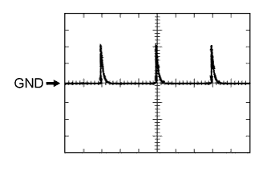
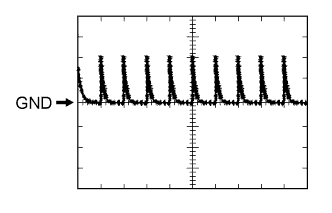
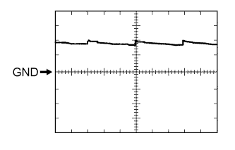
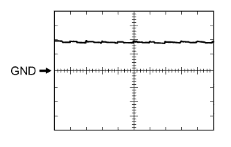

WIRELESS DOOR LOCK CONTROL SYSTEM > TERMINALS OF ECU |
| CHECK DRIVER SIDE JUNCTION BLOCK ASSEMBLY AND MAIN BODY ECU (MULTIPLEX NETWORK BODY ECU) |

Remove the main body ECU (Click here).
Measure the voltage and resistance according to the value(s) in the table below.
| Terminal No. (Symbol) | Wiring Color | Terminal Description | Condition | Specified Condition |
| A-30 (BECU) - Body ground | - | Auxiliary battery power supply | Always | 11 to 14 V |
| A-31 (ALTB) - Body ground | - | Auxiliary battery power supply | Always | 11 to 14 V |
| A-32 (IG) - Body ground | - | Engine switch power supply | Engine switch on (IG) | 11 to 14 V |
| A-32 (IG) - Body ground | - | Engine switch power supply | Engine switch off | Below 1 V |
| A-29 (ACC) - Body ground | - | ACC power supply | Engine switch on (ACC) | 11 to 14 V |
| A-29 (ACC) - Body ground | - | ACC power supply | Engine switch off | Below 1 V |
| A-11 (GND1) - Body ground | - | Ground | Always | Below 1 Ω |
| G46-3 (GND2) - Body ground | W-B - Body ground | Ground | Always | Below 1 Ω |
Install the main body ECU (Click here).
Measure the voltage according to the value(s) in the table below.
| Terminal No. (Symbol) | Wiring Color | Terminal Description | Condition | Specified Condition |
| 2H-27 (FLCY) - Body ground | R - Body ground | Front door LH courtesy switch input | Front door LH open | Below 1 V |
| 2H-27 (FLCY) - Body ground | R - Body ground | Front door LH courtesy switch input | Front door LH closed | 11 to 14 V |
| 2D-15 (FRCY) - Body ground | B - Body ground | Front door RH courtesy switch input | Front door RH open | Below 1 V |
| 2D-15 (FRCY) - Body ground | B - Body ground | Front door RH courtesy switch input | Front door RH closed | 11 to 14 V |
| G48-3 (LCTY) - Body ground | V - Body ground | Rear door LH courtesy light switch input | Rear door LH open | Below 1 V |
| G48-3 (LCTY) - Body ground | V - Body ground | Rear door LH courtesy light switch input | Rear door LH closed | 11 to 14 V |
| G47-6 (RCTY) - Body ground | R - Body ground | Rear door RH courtesy light switch input | Rear door RH open | Below 1 V |
| G47-6 (RCTY) - Body ground | R - Body ground | Rear door RH courtesy light switch input | Rear door RH closed | 11 to 14 V |
| G47-19 (BCTY) - Body ground | G - Body ground | Back door courtesy light switch input | Back door open | Below 1 V |
| G47-19 (BCTY) - Body ground | G - Body ground | Back door courtesy light switch input | Engine switch off, all doors closed and back door closed | Pulse generation (See waveform 1 or 2) |
| G47-1 (GCTY) - Body ground | V - Body ground | Glass hatch courtesy switch input | Glass hatch open | Below 1 V |
| G47-1 (GCTY) - Body ground | V - Body ground | Glass hatch courtesy switch input | Engine switch off, all doors closed and glass hatch closed | Pulse generation (See waveform 3 or 4) |
| G47-7 (LSFL) - Body ground | G - Body ground | Front door LH lock position switch input | Front door LH unlocked | Below 1 V |
| G47-7 (LSFL) - Body ground | G - Body ground | Front door LH lock position switch input | Engine switch off, all doors closed and front door LH locked | Pulse generation (See waveform 5 or 6) |
| G47-18 (LSFR) - Body ground | G - Body ground | Front door RH lock position switch input | Front door RH unlocked | Below 1 V |
| G47-18 (LSFR) - Body ground | G - Body ground | Front door RH lock position switch input | Engine switch off, all doors closed and front door RH locked | Pulse generation (See waveform 7 or 8) |
| 2H-25 (LSWL) - Body ground | B - Body ground | Rear door LH lock position switch input | Rear door LH unlocked | Below 1 V |
| 2H-25 (LSWL) - Body ground | B - Body ground | Rear door LH lock position switch input | Engine switch off, all doors closed and rear door LH locked | Pulse generation (See waveform 9 or 10) |
| G46-2 (LSWR) - Body ground | V - Body ground | Rear door RH lock position switch input | Rear door RH unlocked | Below 1 V |
| G46-2 (LSWR) - Body ground | V - Body ground | Rear door RH lock position switch input | Engine switch off, all doors closed and rear door RH locked | Pulse generation (See waveform 11 or 12) |
| G48-13 (LSWB) - Body ground | SB - Body ground | Back door lock position switch input | Back door unlocked | Below 1 V |
| G48-13 (LSWB) - Body ground | SB - Body ground | Back door lock position switch input | Engine switch off, all doors closed and back door locked | Pulse generation (See waveform 13 or 14) |
| 2F-13 (BZR) - Body ground | GR - Body ground | Wireless door lock buzzer signal | Wireless door lock buzzer off | Below 1 V |
| 2F-13 (BZR) - Body ground | GR - Body ground | Wireless door lock buzzer signal | Wireless door lock buzzer on | 11 to 14 V |
| G47-3 (HAZ) - Body ground | W - Body ground | Hazard warning signal light signal output | Hazard warning signal switch off | Below 1 V |
| G47-3 (HAZ) - Body ground | W - Body ground | Hazard warning signal light signal output | Hazard warning signal switch on | 11 to 14 V |
|  |
Using an oscilloscope, check waveform 1.
| Item | Content |
| Terminal No. (Symbol) | G47-19 (BCTY) - Body ground |
| Tool Setting | 5 V/DIV., 20 ms/DIV. |
| Condition | Engine switch off, all doors closed and back door closed |
|  |
Using an oscilloscope, check waveform 2.
| Item | Content |
| Terminal No. (Symbol) | G47-19 (BCTY) - Body ground |
| Tool Setting | 5 V/DIV., 20 ms/DIV. |
| Condition | Engine switch off, all doors closed and back door closed |
Using an oscilloscope, check waveform 3.
| Item | Content |
| Terminal No. (Symbol) | G47-1 (GCTY) - Body ground |
| Tool Setting | 5 V/DIV., 20 ms/DIV. |
| Condition | Engine switch off, all doors closed and glass hatch closed |
Using an oscilloscope, check waveform 4.
| Item | Content |
| Terminal No. (Symbol) | G47-1 (GCTY) - Body ground |
| Tool Setting | 5 V/DIV., 20 ms/DIV. |
| Condition | Engine switch off, all doors closed and glass hatch closed |
Using an oscilloscope, check waveform 5.
| Item | Content |
| Terminal No. (Symbol) | G47-7 (LSFL) - Body ground |
| Tool Setting | 5 V/DIV., 20 ms/DIV. |
| Condition | Engine switch off, all doors closed and front door LH locked |
Using an oscilloscope, check waveform 6.
| Item | Content |
| Terminal No. (Symbol) | G47-7 (LSFL) - Body ground |
| Tool Setting | 5 V/DIV., 20 ms/DIV. |
| Condition | Engine switch off, all doors closed and front door LH locked |
Using an oscilloscope, check waveform 7.
| Item | Content |
| Terminal No. (Symbol) | G47-18 (LSFR) - Body ground |
| Tool Setting | 5 V/DIV., 20 ms/DIV. |
| Condition | Engine switch off, all doors closed and front door RH locked |
Using an oscilloscope, check waveform 8.
| Item | Content |
| Terminal No. (Symbol) | G47-18 (LSFR) - Body ground |
| Tool Setting | 5 V/DIV., 20 ms/DIV. |
| Condition | Engine switch off, all doors closed and front door RH locked |
Using an oscilloscope, check waveform 9.
| Item | Content |
| Terminal No. (Symbol) | 2H-25 (LSWL) - Body ground |
| Tool Setting | 5 V/DIV., 20 ms/DIV. |
| Condition | Engine switch off, all doors closed and rear door LH locked |
Using an oscilloscope, check waveform 10.
| Item | Content |
| Terminal No. (Symbol) | 2H-25 (LSWL) - Body ground |
| Tool Setting | 5 V/DIV., 20 ms/DIV. |
| Condition | Engine switch off, all doors closed and rear door LH locked |
|  |
Using an oscilloscope, check waveform 11.
| Item | Content |
| Terminal No. (Symbol) | G46-2 (LSWR) - Body ground |
| Tool Setting | 5 V/DIV., 20 ms/DIV. |
| Condition | Engine switch off, all doors closed and rear door RH locked |
|  |
Using an oscilloscope, check waveform 12.
| Item | Content |
| Terminal No. (Symbol) | G46-2 (LSWR) - Body ground |
| Tool Setting | 5 V/DIV., 20 ms/DIV. |
| Condition | Engine switch off, all doors closed and rear door RH locked |
Using an oscilloscope, check waveform 13.
| Item | Content |
| Terminal No. (Symbol) | G48-13 (LSWB) - Body ground |
| Tool Setting | 5 V/DIV., 20 ms/DIV. |
| Condition | Engine switch off, all doors closed and back door locked |
Using an oscilloscope, check waveform 14.
| Item | Content |
| Terminal No. (Symbol) | G48-13 (LSWB) - Body ground |
| Tool Setting | 5 V/DIV., 20 ms/DIV. |
| Condition | Engine switch off, all doors closed and back door locked |
| CHECK CERTIFICATION ECU |
Disconnect the G26 ECU connector.
Measure the voltage and resistance according to the value(s) in the table below.
| Terminal No. (Symbol) | Wiring Color | Terminal Description | Condition | Specified Condition |
| G26-1 (+B) - G26-15 (E) | V - W-B | +B power supply | Always | 11 to 14 V |
| G26-15 (E) - Body ground | W-B - Body ground | Ground | Always | Below 1 Ω |
| G26-16 (IG) - G26-15 (E) | W - W-B | IG power supply | Engine switch off → Engine switch on (IG) | Below 1 V → 11 to 14 V |
| G26-17 (CUTB) - G26-15 (E) | L - W-B | +B power supply | Always | 11 to 14 V |
Reconnect the G26 ECU connector.
Measure the voltage according to the value(s) in the table below.
| Terminal No. (Symbol) | Wiring Color | Terminal Description | Condition | Specified Condition |
| G27-5 (RCO) - G26-15 (E) | L - W-B | Door control receiver power source | Engine switch off, all doors closed and transmitter switch not pressed → pressed | Below 1 V → 4.5 to 5.5 V |
| G27-15 (RDA) - G26-15 (E) | G - W-B | Door control receiver data input signal | Engine switch off | 11 to 14 V pulse generation at regular intervals |
| G27-16 (RSSI) - G26-15 (E) | P - W-B | Door control receiver electric wave presence signal | All doors locked, all doors closed and transmitter switch not pressed → pressed | 11 to 14 V → Below 2 V |